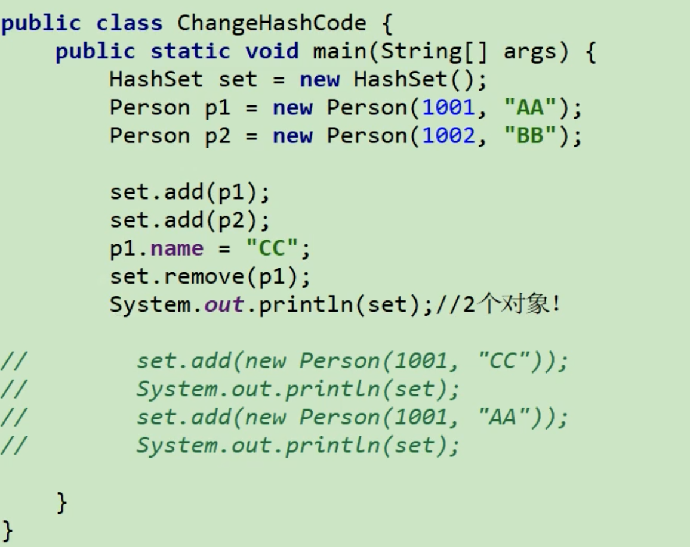

6、对象存活判定算法、GC算法、STW、GC种类详解
引言
程序计数器、虚拟机栈、本地方法栈三个区域随线程而生，伴线程而亡。而运行期间，每个栈桢所需的空间大小在编译期就大致确定。因此这几个区域的内存分配和回收都具备确定性，在这些区域内不需要过多考虑回收的问题，因为会随着线程或方法栈桢的销毁而自动回收。
Java堆空间和元数据空间，这部分区域的内存分配和回收都是动态的，而GC机制所关注的是就是这块区域。
这两块区域是运行时数据区中的共享区，并且因为多态的概念，在运行时，一个类不同的子类实例，所需的内存空间是不同的，也包括一个方法不同的方法版本所需的空间也是不同的，所以只有在程序处于运行期间时才能知道会具体创建哪些对象。
一、如何判定存活对象
“垃圾”是指运行过程中已经没有任何指针指向的对象。
主要是两种判定算法，引用计数算法，可达性分析算法
1.1、引用计数算法
创建出的每个对象自身都携带一个引用计数器，主要用于记录自身的引用情况。当一个指针指向当前对象时，该计数器会+1，如下：
Object obj = new Object();
当Object的对象实例被创建出来后，计数器会被初始化为1，因为局部变量obj的指针引用了该实例对象。而后续执行过程中，又有另外一个变量引用该实例时，该对象的引用计数器会+1。而当方法执行结束，栈帧中局部变量表中引用该对象的指针随之销毁时，当前对象的引用计数器会-1。当一个对象的计数器为0时，代表当前对象已经没有指针引用它了，那么在GC发生时，该对象会被判定为“垃圾”，然后会被回收。
这种判断算法的优势在于：实现简单，垃圾便于辨识，判断效率高，回收没有延迟性。
该算法一方面因为需要额外存储计数器，以及每次引用指向或消失时都需要同步更新计数器，所以增加了存储成本和时间开销；
另一方面存在一个致命缺陷，这种算法无法处理两个对象相互引用这种引用循环的状况。
1.2、可达性分析算法（或根搜索算法、追踪性垃圾收集）
- 可达性分析算法不仅同样具备实现简单和执行高效，而且可以解决循环引用的问题，防止内存泄漏的发生
- Java使用的算法
在该算法中存在一个GCRoots的概念，在GC发生时，会以这些GCRoots作为根节点，然后从上至下的方式进行搜索分析，搜索走过的路线则被称为Reference Chain引用链。当一个对象没有任何引用链相连时，则会被判定为该对象是不可达的，即代表着此对象不可用，最终该对象会被判定为“垃圾”对象等待回收。
1.2.1可以作为GCRoots的对象
- 虚拟机栈中引用的对象
- 各个线程被调用的方法中使用的参数、局部变量等
- 本地方法栈JNI（通常说的本地方法）引用的对象
- 类静态属性引用的对象
- Java类的引用类型静态变量
- 方法区中常量引用的对象
- 字符串常量池（String Table） 里的引用
- 所有被同步锁（Sychronized）持有的对象
- Java虚拟机内部的引用
- 基本数据类型对应的class对象，一些异常(NullPointerException,OutOfMemoryException)，系统类加载器
二、垃圾回收算法
2.1、标记-清除算法
在标记阶段会根据可达性分析算法，通过根节点标记堆中所有的可达对象，而这些对象则被称为堆中存活对象，反之，未被标记的则为垃圾对象。然后在清除阶段，会对于所有未标记的对象进行清除。
标记-清除算法是最初的GC算法，因为在标记阶段需要停下所有用户线程，也就是发生STW，而标记的时候又需要遍历整个堆空间中的所有GcRoots，所以耗时比较长，对于客户端而言，可能会导致GC发生时，造成很长一段时间内无响应。同时，因为堆空间中的垃圾对象是会分散在内存的各个角落，所以一次GC之后，会造成大量的内存碎片，也就是通过标记-清除算法清理出来的内存是不连续的，为了解决这个问题，JVM就不得不再额外维持一个内存的空闲列表，这又是一种开销。而且在分配数组对象或大对象时，连续的内存空间资源又会变得很匮乏。
2.2、复制算法
复制算法会将原有的堆内存分成两块，在同一时刻只会使用一块内存用于对象分配。在发生GC时，首先会将使用的那块内存区域的存货对象复制到未使用的内存中。等复制完之后，对当前内存进行全面清除回收，清除完之后，交换两块内存的角色，最后GC结束。
复制算法带来的好处是显而易见的，因为每次GC都是直接对半边区域进行回收，所以回收之后不需要考虑内存碎片的复杂情况，在内存分配时直接可以使用简单高效的 指针碰撞 方式分配对象。
这种算法最大的问题在于对内存的浪费，因为实际内存分配时只会使用一块内存，所以在内存分配时，内存直接缩水一半。同时，对象的移动的开销也需要考虑在内，所以想使用这种算法，对象的存活率要非常低才行。
一般采用复制算法来收集新生代空间，因为新生代中95%的对象是朝生夕死的。
2.3、标记-压缩算法
标记-压缩算法适用于存活率较高的场景。
- ①标记阶段：和标-清算法一样。在标记阶段时也会基于
GcRoots节点遍历整个内存中的所有对象，然后对所有存活对象做一次标记。 - ②整理阶段：在整理阶段该算法并不会和标-清算法一样简单的清理内存，而是会将所有存活对象移动（压缩）到内存的一端，然后对于存活对象边界之外的内存进行统一回收。
标记
触发GC
当所有存活对象全部被压缩到内存的一端后，GC机制会开始对于存活对象边界之外的内存区域进行统一回收，回收掉这些内存区域之后，最后再把存活对象的GC标志复位，然后GC结束
它的整体收集效率并不高。因为标-整算法不仅仅要标记对象，同时还要移动存活对象，所以整个GC过程下来，它所需要耗费的时间资源开销必然是不小的。
2.4、垃圾收集器总结
- 收集速度：复制算法 > 标-清算法 > 标-整算法
- 内存整齐度：复制算法 = 标-整算法 > 标-清算法
- 内存利用率：标-整算法 > 标-清算法 > 复制算法
三、内存泄漏与内存溢出
3.1、内存溢出
垃圾回收跟不上内存消耗的速度。没有空闲内存，并且垃圾收集器也无法提供更多内存。
3.1.1、内存不够的原因
（1）Java虚拟机的堆内存设置不够
比如我们要处理比较可观的数据量，但是没有显式指定JVM堆大小或者指定数值偏小。我们可以通过设置 -Xms和-Xmx来调整。
（2）代码中创建了大量大对象，并且长时间不能被垃圾收集器收集（存在被引用）
3.2、内存泄漏
3.2.1、内存泄漏的8种情况
（1）静态集合类
如静态的LinkedList和HashMap。他们的生命周期与JVM一致。
长生命周期对象持有短生命周期对象的引用，尽管短生命周期对象不再使用，但是因为长生命周期对象持有它的引用而不能被回收。
public class MemoryLeak{ |
（2）单例模式
因为单例模式的静态性，生命周期和JVM一样。所以如果单例模式持有外部对象的引用，那么这个外部对象也不会被回收。
（3）内部类持有外部类
（4）各种连接，如数据库连接、网络连接和IO连接
（5）变量不合理的作用域
（6）改变哈希值
 p1不会被移除
（7）缓存泄漏
项目启动时，加载数据到缓存。
对于这个问题，可以使用WeakHashMap代表缓存，此种map的特点是，当除了自身有对key的引用外，此key没有其他引用那么此map会自动丢弃该值。
（8）监听器和回调
 wechat
wechat alipay
alipay